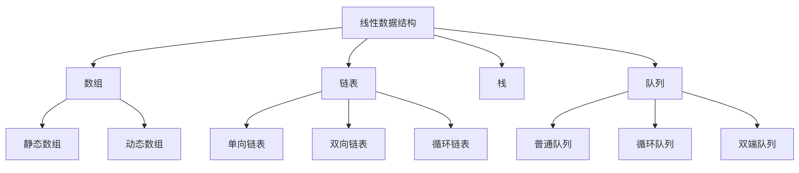
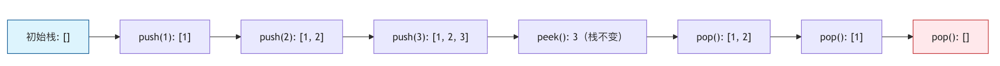
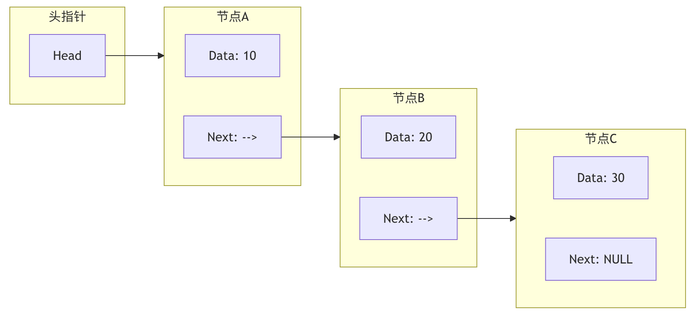
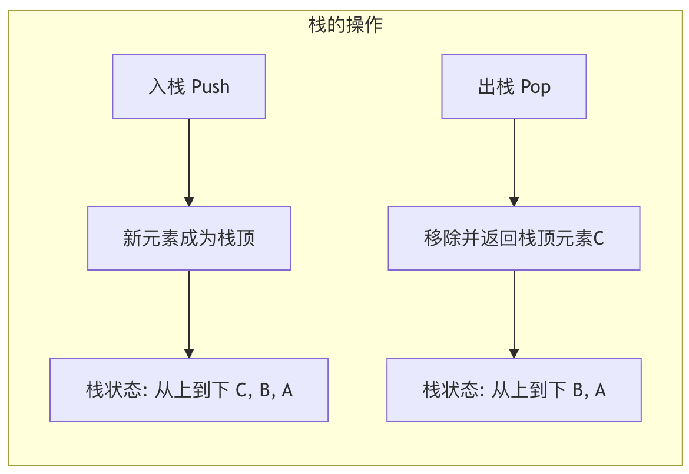

'103号室-空室'
この章では、最も基礎的でよく使われるデータ構造の一種を紹介します——線形データ構造。
線形データ構造まるで一列に並んだ人のようです：
- 各人（要素）には明確な前後の関係があります
- 最初と最後を除き、各人には前駆と後続がそれぞれ1つずつあります
- データ要素間は一対一の線形関係です
コーヒーを買うために並んだり、本棚の本を整理したりする場面を想像してください。
これらの場面には共通点があります：要素が一つずつ並び、線を形成していることです。
コンピュータ科学において、このように順番に並んだデータ集合が線形データ構造です。
線形データ構造の特徴は、最初と最後の要素を除き、各要素が1つだけの前駆と1つの後続。
一般的な線形データ構造：
- 配列：番号付きのロッカーが一列に並んだようなもので、各ロッカーは固定位置にあります
- リンクリスト：手をつないだ人の列のようなもので、各人は前後の人だけを覚えています
- 栈：皿を積み重ねたようなもので、一番上からしか取り出せません
- キュー：チケットを買う列のようなもので、先着順です
下の図は線形データ構造の分類体系を示しています。各構造には特定の応用シーンと性能特性があります：

下の図はスタックの基本操作プロセスを示しています。スタックはLIFO（後入れ先出し）の原則に従います：

配列（Array）
静的配列
| 特性 | 説明 | 時間計算量 |
|---|---|---|
| 要素へのアクセス | インデックスで直接アクセス | O(1) |
| 要素の挿入 | 後続の要素を移動する必要がある | O(n) |
| 要素の削除 | 後続の要素を移動する必要がある | O(n) |
| 空間割り当て | 固定サイズ、事前に割り当て | O(1) |
動的配列
| 特性 | 説明 | 時間計算量 |
|---|---|---|
| 要素へのアクセス | インデックスで直接アクセス | O(1) |
| 要素の挿入 | 容量拡張とコピーが必要になる場合がある | 平均O(1)、最悪O(n) |
| 要素の削除 | 後続の要素を移動する必要がある | O(n) |
| 空間割り当て | 自動拡張 | O(n)（拡張時） |
リンクリスト（Linked List）
単方向リンクリスト
| 操作 | 説明 | 時間計算量 |
|---|---|---|
| 要素へのアクセス | 先頭から走査する必要がある | O(n) |
| 先頭への挿入 | 直接挿入 | O(1) |
| 末尾への挿入 | 末尾まで走査する必要がある | O(n) |
| 中間への挿入 | まず位置を見つける必要がある | O(n) |
| 要素の削除 | まず位置を見つける必要がある | O(n) |
双方向リンクリスト
| 操作 | 説明 | 時間計算量 |
|---|---|---|
| 要素へのアクセス | 先頭または末尾から走査する必要がある | O(n) |
| 先頭への挿入 | 直接挿入 | O(1) |
| 末尾への挿入 | 直接挿入（末尾ポインタがある場合） | O(1) |
| 中間への挿入 | まず位置を見つける必要がある | O(n) |
| 要素の削除 | まず位置を見つける必要がある | O(n) |
スタック（Stack）
| 操作 | 説明 | 時間計算量 |
|---|---|---|
| push（プッシュ） | スタックの先頭に要素を追加 | O(1) |
| pop（ポップ） | スタックの先頭の要素を削除 | O(1) |
| peek（ピーク） | スタックの先頭の要素を確認 | O(1) |
| isEmpty（空判定） | スタックが空かどうかを確認 | O(1) |
キュー（Queue）
| 操作 | 説明 | 時間計算量 |
|---|---|---|
| enqueue（エンキュー） | キューの末尾に要素を追加 | O(1) |
| dequeue（デキュー） | キューの先頭の要素を削除 | O(1) |
| front（先頭確認） | キューの先頭の要素を確認 | O(1) |
| isEmpty（空判定） | キューが空かどうかを確認 | O(1) |
線形データ構造の比較図
配列：データの固定アパート
配列は最も簡単で、最も直接的な線形データ構造です。
私たちはそれを一棟の固定階数のアパート。
基本概念と特徴
- 連続格納：配列はメモリ内で連続した空間を占有します。アパートの部屋が隣り合っているようなものです。
- 固定サイズ：配列は作成時にその容量（長さ）を決定する必要があり、その後は通常変更できません。アパートが完成すると部屋数が固定されるようなものです。
- インデックスアクセス：各要素（部屋）には一意の番号があり、これをインデックスと呼びます。ほとんどのプログラミング言語では、インデックスは
00から始まります。インデックスを使うと、任意の要素に直接・高速にアクセスでき、時間計算量はO(1)。
コア操作とコード例
コア操作とコード例listPythonで配列をデモンストレーションしましょう（Pythonでは通常 `list` をlist使って模擬しますが、Pythonの
例
apartment_building = [# 1. 创建数组, '101室-张三', '102室-李四', '103室-王五', '104室-空置']
print('105室-空置', apartment_building)
"公寓楼住户情况："
# 2. 访问元素 (通过索引)
tenant = apartment_building[1] # 访问102室
print(f# 索引从0开始，所以1对应第二个元素)
"102室的住户是：{tenant}"
# 3. 更新元素
apartment_building[3] = # 104室搬来了新住户赵六
print('104室-赵六', apartment_building)
"赵六入住后："
# 4. 插入元素 (在末尾添加相对高效，模拟"扩建")
apartment_building.append(# 假设允许在末尾加盖一间106室)
print('106室-孙七', apartment_building)
"加盖106室后："
# 5. 删除元素
# 103室的王五搬走了
# 方法一：标记为空置（逻辑删除）
# apartment_building
removed_tenant = apartment_building.pop(2) # 方法二：移除该元素，后续元素需要前移（物理删除，效率较低）
print(f# 移除索引为2的元素)
print("{removed_tenant} 已搬走。", apartment_building)
"王五が引っ越した後："
寓楼住户情况： ['101室-张三', '102室-李四', '103室-王五', '104室-空置', '105室-空置'] 102室的住户是：102室-李四 赵六入住后： ['101室-张三', '102室-李四', '103室-王五', '104室-赵六', '105室-空置'] 加盖106室后： ['101室-张三', '102室-李四', '103室-王五', '104室-赵六', '105室-空置', '106室-孙七'] 103室-王五 已搬走。 王五搬走后： ['101室-张三', '102室-李四', '104室-赵六', '105室-空置', '106室-孙七']
長所と短所
| 長所と短所 | 長所 |
|---|---|
| 短所高速ランダムアクセス | ：インデックスを使うと、任意の要素に定数時間でアクセスできます。サイズ固定 |
| ：静的配列は一度作成すると、容量を変更するのが難しい。メモリ効率が高い | ：連続格納であり、要素間の関係を保存するための追加スペースが不要。中央に要素を挿入または削除する場合、連続性を保つために大量の後続要素を移動する必要があります。 |
リンクリスト：データの宝探し列車
配列の固定サイズと挿入・削除の非効率さが問題になるとき、リンクリストの登場です。リンクリストは一列の列車、各車両（ノード）には貨物（データ）が積まれ、連結器（ポインタ）で次の車両につながっています。
基本概念と種類
リンクリストの各ノードは少なくとも次の2つの部分を含みます：
- データ領域：実際のデータ値を格納します。
- ポインタ領域：メモリ上の次のノードのアドレスを格納します。

上の図は単方向リストの構造を示しています。先頭ポインタは最初のノードを指し、各ノードのNextポインタは次のノードを指し、最後のノードのNextポインタは NULL を指しNULL、リンクリストの終了を示します。
リンクリストの主な種類：
- 単方向リスト：ノードは次のノードのみを指します。
- 双方向リスト：ノードは前と次の両方のノードを指すため、双方向に走査できます。
- 循環リスト：末尾ノードが先頭ノードを指し、環を形成します。
コア操作とコード例
簡単な単方向リストを実装してみましょう。
例
"""リンクリストのノードクラスを定義"""
def __init__(self, data):
self.data = data # データ領域
self.next = None # ポインタ領域、初期は空を指す
class LinkedList:
"""単方向リストクラスを定義"""
def __init__(self):
self.head = None # リンクリストの先頭ポインタ
def append(self, data):
"""リンクリストの末尾にノードを追加"""
new_node = ListNode(data)
if not self.head: # リンクリストが空なら、新しいノードが先頭ノードになる
self.head = new_node
return
last_node = self.head
while last_node.next: # 最後のノードまで走査する
last_node = last_node.next
last_node.next = new_node # 新しいノードを末尾に接続する
def prepend(self, data):
"""リンクリストの先頭にノードを追加"""
new_node = ListNode(data)
new_node.next = self.head
self.head = new_node
def delete(self, key):
"""値がkeyの最初のノードを削除"""
current_node = self.head
# 削除対象が先頭ノードの場合
if current_node and current_node.data == key:
self.head = current_node.next
current_node = None
return
prev_node = None
# 削除するノードを探して走査する
while current_node and current_node.data != key:
prev_node = current_node
current_node = current_node.next
if current_node is None: # 見つからなかった
return
# 見つかったら、そのノードを迂回して接続する
prev_node.next = current_node.next
current_node = None
def print_list(self):
"""リンクリストの全要素を出力"""
current_node = self.head
while current_node:
print(current_node.data, end=" -> ")
current_node = current_node.next
print("NULL")
# リンクリストをテスト
print("=== 単方向リスト操作デモ ===")
train = LinkedList()
train.append("車両1-石炭")
train.append("車両2-材木")
train.prepend("車頭") # 先頭に追加
train.append("車両3-鋼材")
print("初期の列車：")
train.print_list() # 出力：車頭 -> 車両1-石炭 -> 車両2-材木 -> 車両3-鋼材 -> NULL
train.delete("車両2-材木")
print("材木を降ろした後：")
train.print_list() # 出力：車頭 -> 車両1-石炭 -> 車両3-鋼材 -> NULL
出力：
=== 单向链表操作演示 === 初始列车： 车头 -> 车厢1-煤炭 -> 车厢2-木材 -> 车厢3-钢材 -> NULL 卸下木材后： 车头 -> 车厢1-煤炭 -> 车厢3-钢材 -> NULL
長所と短所
| 長所 | 短所 |
|---|---|
| 動的サイズ：固定スペースを事前に割り当てる必要がなく、柔軟に拡張・縮小できます。 | メモリオーバーヘッド：各ノードがポインタを格納するための追加スペースを必要とします。 |
| 効率的な挿入/削除：ノードの位置が分かっていれば、ポインタを変更するだけでよく、大量の要素を移動する必要はありません。 | 順次アクセス：配列のようにインデックスで直接アクセスできず、先頭から走査する必要があります。 |
| キャッシュに不向き：ノードがメモリ上に分散して格納されるため、CPUキャッシュのプリフェッチに不利です。 |
スタック：データの皿積み
スタックは後入れ先出しのデータ構造で、レストランで重ねられた皿のように、常に一番上（最後に置いたもの）を取り出します。
基本概念と操作
スタックは一端（スタックトップ）での挿入（プッシュ）と削除（ポップ）のみを許可します。もう一方の端はスタックボトム。。
核心操作：
- push(data)：データをスタックトップに積みます。
- pop()：スタックトップの要素をポップして返します。
- peek() / top()：スタックトップの要素をポップせずに確認します。
- is_empty()：スタックが空かどうかを確認します。

応用シーンとコード例
スタックはコンピュータサイエンスで非常に広く応用されています。例：関数呼び出しスタック、ブラウザの進む/戻る、式の評価、括弧の対応付けなど。
例
"""リストを使ってスタックを実装"""
def __init__(self):
self.items = []
def push(self, item):
"""プッシュ"""
self.items.append(item) # リストの末尾をスタックトップとする
def pop(self):
"""ポップ。スタックが空ならNoneを返す"""
if not self.is_empty():
return self.items.pop()
return None
def peek(self):
"""スタックトップの要素を確認"""
if not self.is_empty():
return self.items[-1]
return None
def is_empty(self):
"""スタックが空かどうかを確認"""
return len(self.items) == 0
def size(self):
"""スタックのサイズを返す"""
return len(self.items)
# 応用例：括弧の対応付けチェック
def is_balanced_parentheses(expression):
"""
式の中の括弧が対応しているかをチェックする
例: (()) は釣り合っている、(() は釣り合っていない
"""
stack = Stack()
# 括弧の対応マッピング
matching_bracket = {')': '(', ']': '[', '}': '{'}
for char in expression:
if char in '([{': # 左括弧ならプッシュ
stack.push(char)
elif char in ')]}': # 右括弧の場合
if stack.is_empty():
return False # スタックが空なら、右括弧が多い
top_char = stack.pop()
if matching_bracket[char] != top_char: # 対応しているかチェック
return False
# ループ終了後、スタックは空になるはず
return stack.is_empty()
# スタックと括弧の対応をテスト
print("\n"=== スタックと括弧の対応デモ ===")
plate_stack = Stack()
plate_stack.push("皿1")
plate_stack.push("皿2")
plate_stack.push("皿3")
print(f"一番上の皿を取り出す: {plate_stack.pop()}") # 出力：皿3
print(f"現在一番上の皿は: {plate_stack.peek()}") # 出力：皿2
# 括弧の対応をテスト
test_cases = ["((1+2)*3)", "({[ ]})", "((())", ")( )"]
for test in test_cases:
result = "釣り合っています" if is_balanced_parentheses(test) else "釣り合っていません"
print(f"式 '{test}' の括弧は {result} です。")
出力：
=== 栈与括号匹配演示 ===
取出最上面的盘子: 盘子3
现在最上面的盘子是: 盘子2
表达式 '((1+2)*3)' 的括号是 平衡 的。
表达式 '({[ ]})' 的括号是 平衡 的。
表达式 '((())' 的括号是 不平衡 的。
表达式 ')( )' 的括号是 不平衡 的。
キュー：データの並び待ち通路
キューは先入れ先出しのデータ構造で、生活の中で行列が必要な場所（スーパーのレジなど）と同じように、先に来た人が先にサービスを受けます。
基本概念と操作
キューは一端（キューの末尾）での挿入（エンキュー）操作を、もう一方の端（キューの先頭）での削除（デキュー）操作を許可します。
核心操作：
- enqueue(data)：データをキューの末尾に追加します。
- dequeue()：キューの先頭からデータを削除して返します。
- front() / peek()：キューの先頭のデータを削除せずに確認します。
- is_empty()：キューが空かどうかを確認します。
応用シーンとコード例
キューは、タスクを順番に処理する必要があるシーンでよく使われます。例：印刷タスクのキュー、メッセージキュー、幅優先探索など。
例
class Queue:
"""collections.deque を使ってキューを実装"""
def __init__(self):
self.items = deque()
def enqueue(self, item):
"""エンキュー"""
self.items.append(item) # 右側（末尾）から追加
def dequeue(self):
"""デキュー。キューが空ならNoneを返す"""
if not self.is_empty():
return self.items.popleft() # 左側（先頭）から削除
return None
def front(self):
"""キューの先頭要素を確認"""
if not self.is_empty():
return self.items[0]
return None
def is_empty(self):
"""キューが空かどうかを確認"""
return len(self.items) == 0
def size(self):
"""キューのサイズを返す"""
return len(self.items)
# 応用例：印刷タスクのシミュレーション
print("\n"=== キューと印刷タスクのシミュレーション ===")
printer_queue = Queue()
# 3つの印刷タスクが到着するのをシミュレーション
tasks = ["Aliceの履歴書.pdf", "Bobのレポート.doc", "Charlieのグラフ.png"]
for task in tasks:
printer_queue.enqueue(task)
print(f"タスク '{task}' が印刷キューに追加されました。")
# 印刷タスクを処理
print("\n"印刷を開始...")
while not printer_queue.is_empty():
current_task = printer_queue.dequeue()
print(f"印刷中: {current_task}")
# 印刷にかかる時間をシミュレーション
print("すべての印刷タスクが完了しました。")
出力：
=== 队列与打印任务模拟 === 任务 'Alice的简历.pdf' 已加入打印队列。 任务 'Bob的报告.doc' 已加入打印队列。 任务 'Charlie的图表.png' 已加入打印队列。 开始打印... 正在打印: Alice的简历.pdf 正在打印: Bob的报告.doc 正在打印: Charlie的图表.png 所有打印任务已完成。
まとめと比較
私たちは4つの基本的な線形データ構造を学びました。以下の表は、それらの核心的な特性をすばやく振り返り比較するのに役立ちます。
| 特性 | 配列 | リンクリスト | 栈 | キュー |
|---|---|---|---|---|
| 格納方式 | 連続メモリ | 分散メモリ、ポインタで接続 | 配列またはリンクリストで実装 | 配列またはリンクリストで実装 |
| アクセス方式 | ランダムアクセス（インデックスによる） | 順次アクセス（走査が必要） | スタックトップのみ（LIFO） | キューの先頭のみ（FIFO） |
| 挿入/削除の効率 | 末尾は速い、中間/先頭は遅い（要素の移動が必要） | 位置が既知の場合は速い（ポインタを変更するだけ） | スタックトップの操作、O(1) | 末尾にエンキュー、先頭からデキュー、O(1) |
| サイズ | 固定（静的配列） | 動的 | 動的 | 動的 |
| 主な用途 | 高速検索、固定コレクション | 頻繁な挿入・削除、サイズが不確定 | 関数呼び出し、バックトラッキング、括弧の対応 | タスクスケジューリング、バッファ、BFS |
どう選ぶか？
- 必要なのは高速ランダムアクセスとデータ量が既知の場合は、選択配列。
- 必要なのは任意の位置に頻繁に挿入・削除する要素であり、データ量の変化が大きい場合は、選択連結リスト。
- 実装する必要がある「元に戻す」機能または逆方向の処理順序の場合は、検討する栈。
- 順に従う必要がある「先着順」の順でタスクを処理する場合は、使用キュー。
クリックしてノートを共有
ノートはこの記事の内容を拡張するものである必要があります！
記事の投稿はこちらをクリック
登録招待コードの取得方法
ノートを共有する前に必ずログインしてください！
登録招待コードの取得方法